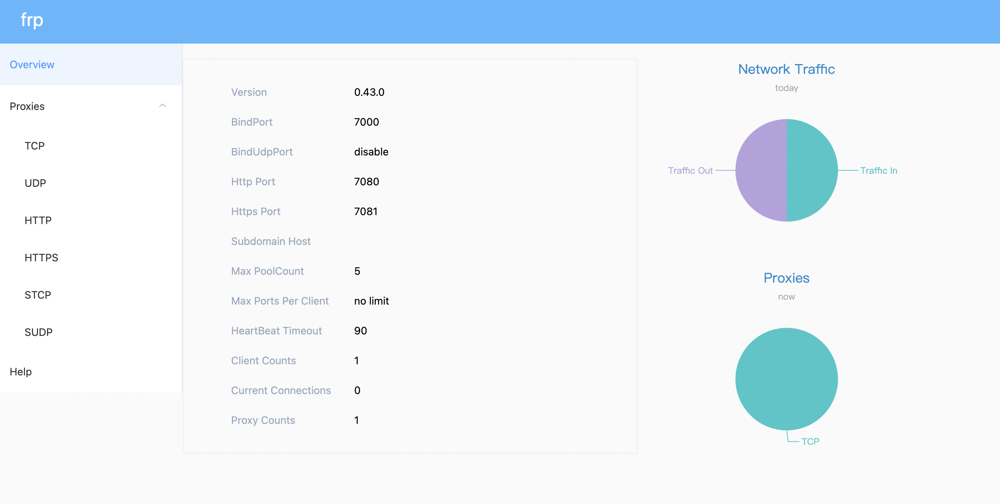
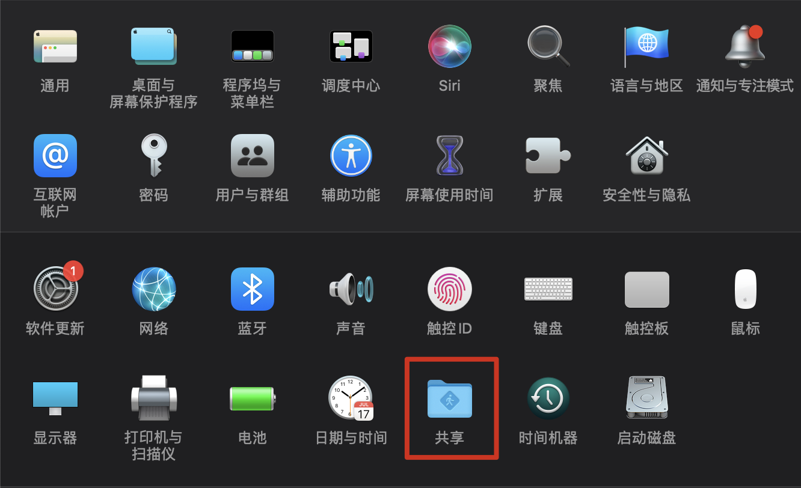
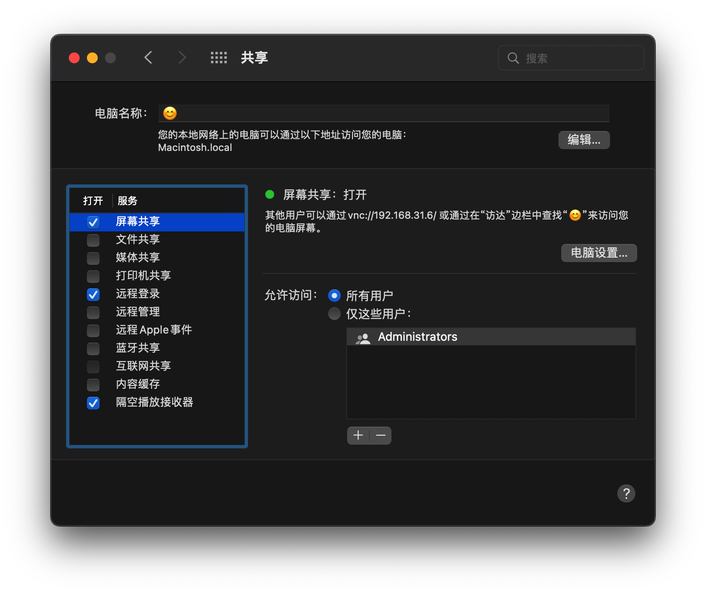
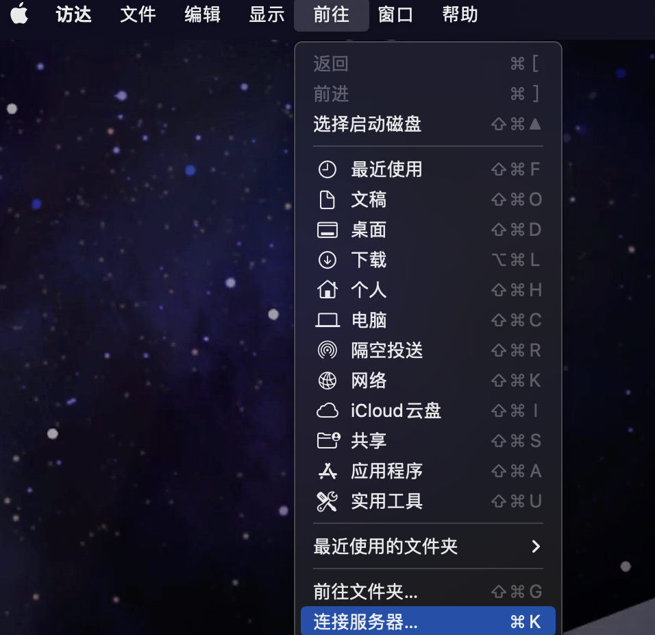

摘要：有时候我们想要通过远程服务器来调用本地的一些服务，或者想要想要远程来控制本地电脑。这时候我们就可以通过frp来进行搭建
需要准备的东西有：
1.一台可以链接到公网的服务器
2.可以访问互联网的Mac
公网服务器部署FRP服务端
这里使用
docker安装frp
先pull镜像
1 | docker pull snowdreamtech/frps |
准备文件夹放置配置文件
1 | mkdir frp |
新建配置文件 frps.ini如下
1 | [common] |
dashboard 的账号密码可以自己定义。
运行容器
运行 docker 命令启动容器。注意 /home/frp/frps.ini 这里为你刚刚新建的路径
1 | docker run -d --restart always --network host --name frps -v /home/frp/frps.ini:/etc/frp/frps.ini snowdreamtech/frps |
这里 –network host: host 我设置的是所有容器端口都对应属主机端口，不存在映射关系。
访问frps界面
直接访问 公网地址：7500 ， 输入账号密码就可直接访问

安装frps客户端
下载 FRP 程序 ，Mac 版的名字是这样的 frp_x.x.x_darwin_amd64.tar.gz，并解压。
设置配置文件
这里我们只用设置 frpc.ini 配置文件
1 | [common] |
执行 ./frpc -c ./frpc.ini 启动连接，正常启动如下图。
开启远程桌面或 SSH 登录
打开设置开启 mac 屏幕共享和远程访问功能

如图所示勾选屏幕共享和远程登录

VNC登录远程桌面
打开“访达（Finder）”，选择菜单【前往】->【链接服务器】，输入vnc://x.x.x.x:7088（将 x.x.x.x 替换成公网服务器 IP 地址）

输入地址确认后，如果连接成功，就可以选择登录方式

添加自动启动
4.1 将 frps 加入自动启动
进入公网服务器，执行下列命令：
1 | sudo cp /xxx/frps /usr/bin/ # 将执行文件移入系统目录 |
4.2 将 frpc 加入自动启动
进入内网 Mac 系统，执行下列操作：
1 | # 编辑自启动文件 |
frpc.plist 文件内容如下，注意文件中的 frpc 和 frpc.ini 路径，可以将这两个文件移到下方配置文件的路径下：
1 |
|
加载并生效：
1 | sudo chown root ~/Library/LaunchAgents/frpc.plist |
别忘了还需要保证 Mac 处于开机运行状态。至此，所有的配置都完成了。
参考文章
通过 FRP 内网穿透并实现 VNC 远程访问 Mac 桌面
如果您喜欢此博客或发现它对您有用，则欢迎对此发表评论。 也欢迎您共享此博客，以便更多人可以参与。 如果博客中使用的图像侵犯了您的版权，请与作者联系以将其删除。 谢谢 ！